LaCulture Marocaine
La Culture Marocaine : Un Mélange Unique et Envoûtant
La culture marocaine est un véritable voyage à travers le temps, une mosaïque vivante où se mêlent traditions millénaires et modernité vibrante. Héritière d’une histoire riche et complexe, elle puise sa force dans la diversité de ses racines : amazighe, arabe, andalouse, africaine et méditerranéenne. Chaque région du Maroc raconte son propre récit à travers ses dialectes, ses coutumes, sa gastronomie, sa musique et son artisanat. Des montagnes de l’Atlas aux dunes du Sahara, des médinas animées aux villages paisibles, le pays respire la tolérance, la créativité et la convivialité. Le Maroc fascine par sa capacité à harmoniser les contrastes : entre tradition et innovation, entre sacré et profane, entre ruralité et urbanisme. Ses fêtes colorées, sa cuisine raffinée et ses expressions artistiques — qu’il s’agisse du Gnawa, de l’Aïta, du Malhoun ou de la calligraphie — témoignent d’une identité en perpétuelle évolution, ouverte sur le monde mais profondément ancrée dans son patrimoine. Plus qu’une simple culture, le Maroc incarne une philosophie de vie où hospitalité, partage et respect des différences constituent les fondements d’une société fière de son passé et tournée vers l’avenir.
La Tbourida : un art équestre marocain entre tradition et fierté
Origine et histoire de la Tbourida
L’origine de la Tbourida remonte à plusieurs siècles, à l’époque où les cavaliers marocains s’exerçaient à la guerre et à la défense des territoires. Les tribus arabes, berbères et sahariennes utilisaient la cavalerie pour démontrer leur puissance et leur habileté au combat. Au fil du temps, ces démonstrations se sont transformées en spectacles rituels présentés lors des fêtes religieuses, des moussems et des mariages. Le mot Tbourida vient du mot arabe baroud, qui signifie « poudre » — une référence directe à la détonation collective des fusils à la fin de la charge.
Quelques Photo :
L’Artisanat traditionnel marocain : un patrimoine vivant
Les principales formes d’artisanat
1. La céramique et la poterie Fabrication d’ustensiles et d’objets décoratifs faits à la main. Particulièrement renommée dans les villes de Fès et de Safi.
2. Le cuivre et l’argent Création d’objets décoratifs, de plateaux, et d’assiettes finement gravés. Ces œuvres reflètent l’adresse et la précision des artisans marocains.
3. Le tissage et la laine Fabrication de tapis (Zarabi), chapeaux, djellabas, et couvertures. Caractérisée par des motifs géométriques et des couleurs naturelles inspirées de l’environnement local.
4. Le travail du bois et la sculpture Utilisé pour les portes, fenêtres, coffres, et meubles traditionnels. Les gravures et motifs minutieux ajoutent une touche artistique unique à chaque pièce.
L’artisanat marocain à l’ère moderne
L’artisanat joue aujourd’hui un rôle clé dans le tourisme culturel, permettant
aux visiteurs
d’acheter des objets authentiques directement auprès des artisans.
Il contribue à préserver l’identité culturelle du Maroc et à transmettre ce
patrimoine vivant aux
générations futures.
Quelques Photo :
Le patrimoine architectural et historique du Maroc
L’architecture traditionnelle
L’architecture traditionnelle marocaine se distingue par son harmonie entre beauté, spiritualité et fonctionnalité. Les maisons anciennes sont souvent construites autour d’un patio central, symbole d’intimité et de convivialité. Les matériaux utilisés — la terre, le plâtre, le bois et les zelliges — reflètent un profond respect de l’environnement et de l’esthétique.
Les médinas et les kasbahs
1. Les médinas
Cœurs historiques des grandes villes comme Fès, Marrakech, et Chefchaouen, les
médinas sont des
labyrinthes de ruelles étroites, de souks animés et de mosquées anciennes.
Elles sont classées au Patrimoine mondial de l’UNESCO pour leur authenticité et leur richesse
culturelle.
2. Les kasbahs et ksour
Situées principalement dans le sud du Maroc, ces forteresses en pisé servaient
autrefois à protéger
les villages et les caravanes.
La Kasbah d’Aït Ben Haddou est un exemple emblématique, célèbre dans le monde
entier et souvent
utilisée comme décor de cinéma
Les monuments historiques
Le Maroc abrite de nombreux monuments qui témoignent de son passé glorieux :
La mosquée Al Quaraouiyine à Fès, fondée au IXe siècle, considérée comme la
plus ancienne université
au monde.
La Tour Hassan à Rabat, symbole d’un projet royal inachevé du XIIe siècle.
Les remparts et portes monumentales de Marrakech, Fès et Meknès, véritables
chefs-d’œuvre
d’architecture militaire et artistique.
Préservation et modernité
Aujourd’hui, le Maroc s’engage activement dans la préservation de son patrimoine architectural, tout en intégrant des éléments traditionnels dans les constructions modernes. Cette alliance entre héritage et innovation fait du Maroc un exemple unique d’équilibre entre passé et présent.
Quelques Photo :
 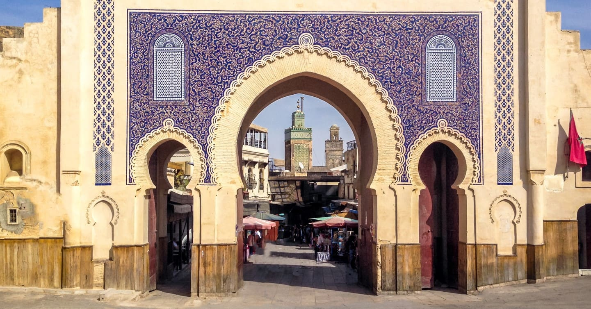
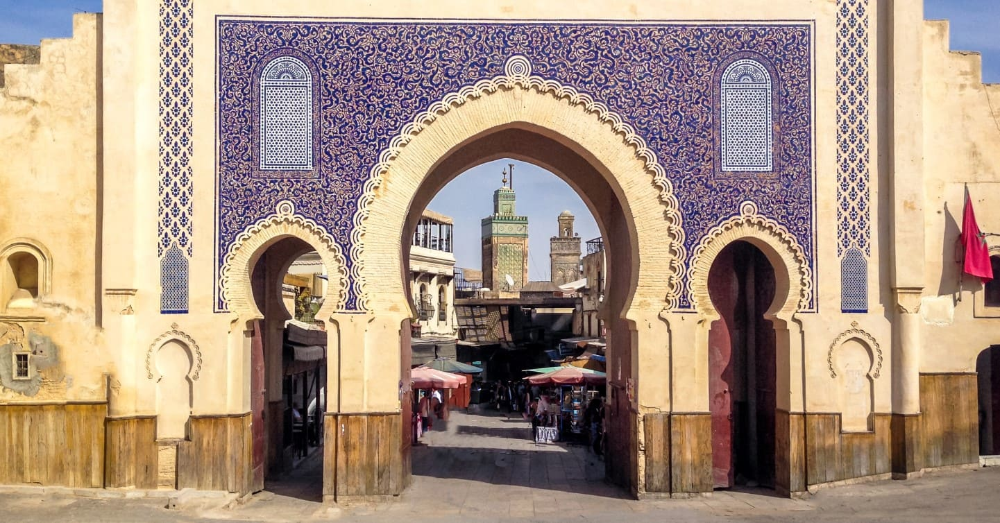
 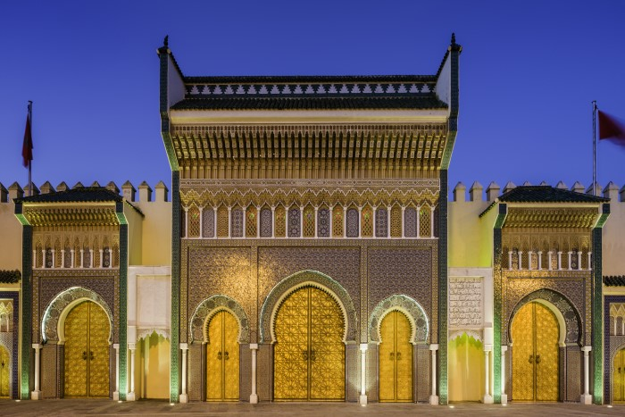
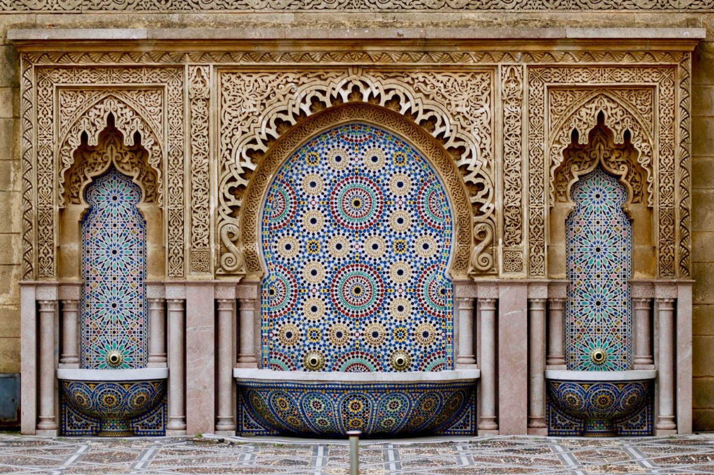
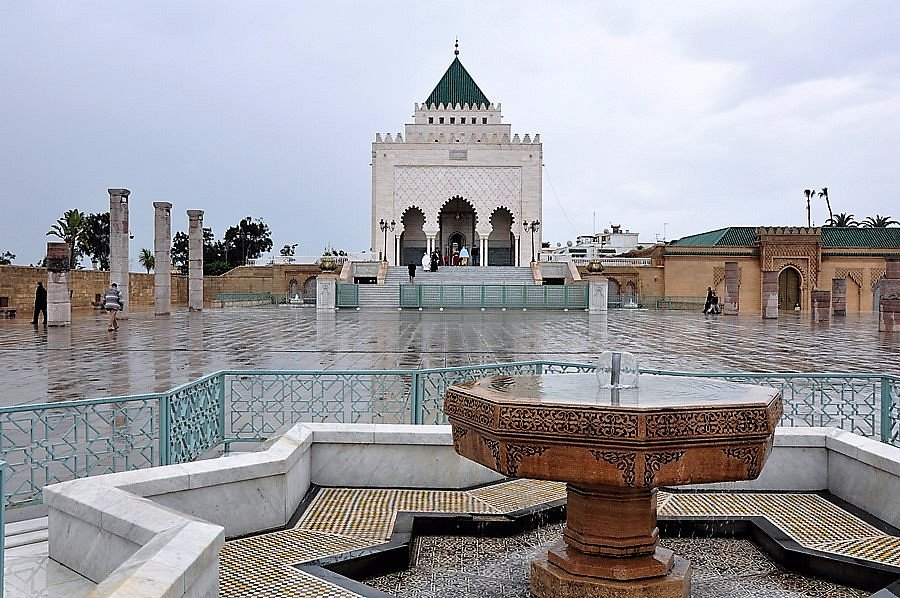
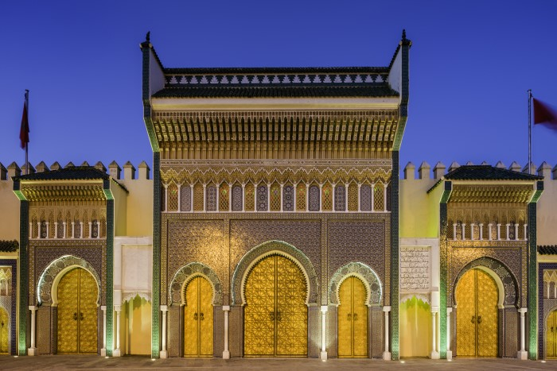
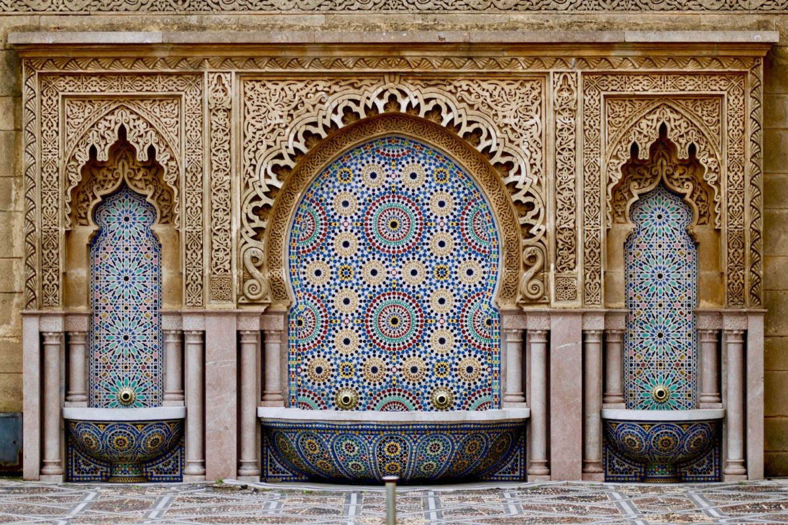
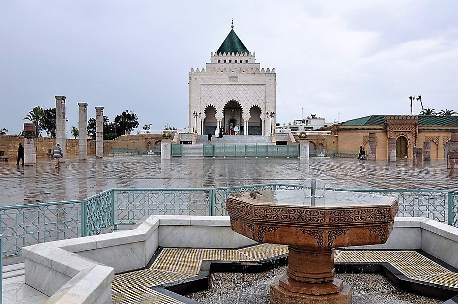
La cuisine marocaine : un art du goût et de la tradition
La cuisine marocaine est l’une des plus riches et des plus célèbres au monde. Elle se distingue par sa grande diversité et par la combinaison harmonieuse des influences arabes, berbères, andalouses et méditerranéennes. Elle repose sur des ingrédients frais et naturels comme les olives, les légumes, les fruits, les herbes aromatiques et les épices telles que la cannelle, le safran et le cumin. Parmi les plats les plus connus, on trouve le couscous, le tajine, la harira et la pastilla, qui reflètent tous un véritable art du goût et de la présentation. Enfin, le thé à la menthe occupe une place spéciale, symbole d’hospitalité et de convivialité au Maroc.
Les ingrédients et les épices
Les épices jouent un rôle essentiel dans la cuisine marocaine. Elles apportent couleur, arôme et
caractère à chaque plat.
Parmi les plus utilisées :
- le safran
- le cumin
- le gingembre
- la cannelle
- le ras el hanout (mélange d’épices typiquement marocain).
Les ingrédients de base comprennent la semoule, les légumes frais, la viande (surtout le mouton et le poulet), et l’huile d’olive.
Les plats traditionnels emblématiques
Le couscous
Plat national par excellence, il est préparé avec de la semoule de blé, des légumes et de la
viande.
Il se déguste traditionnellement le vendredi en famille.
Le tajine
Cuit lentement dans un plat en terre cuite, le tajine se décline en plusieurs
variétés : poulet au
citron confit, bœuf aux pruneaux, ou légumes de saison.
Son goût dépend du mélange d’épices et de la cuisson lente.
La pastilla
Spécialité de Fès, ce plat associe le sucré et le salé avec du pigeon, des amandes et de la cannelle enveloppés dans une pâte fine.
La harira
Soupe traditionnelle à base de tomates, lentilles, pois chiches et coriandre.
Souvent consommée pendant le mois de Ramadan.
Les boissons et les douceurs marocaines
Le thé à la menthe est la boisson nationale, symbole d’hospitalité. Les pâtisseries marocaines, comme les cornes de gazelle, les chebakia et les briouates au miel, accompagnent souvent le thé.
Un patrimoine culinaire vivant
La cuisine marocaine n’est pas seulement un art de la table, c’est une forme
d’expression culturelle.
Elle reflète les traditions, la convivialité et l’amour du partage qui caractérisent le peuple
marocain.
Quelques Photo :


 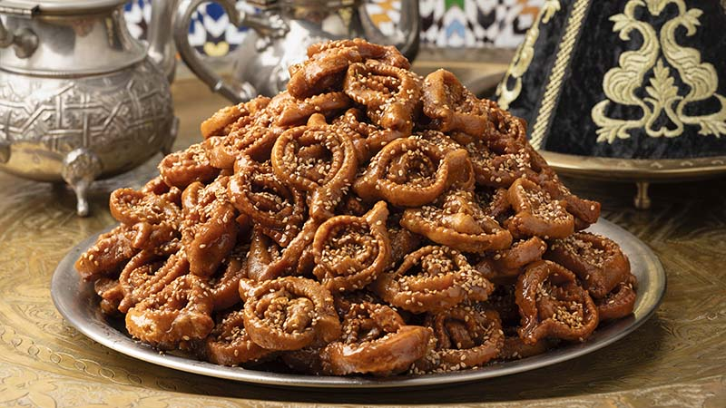
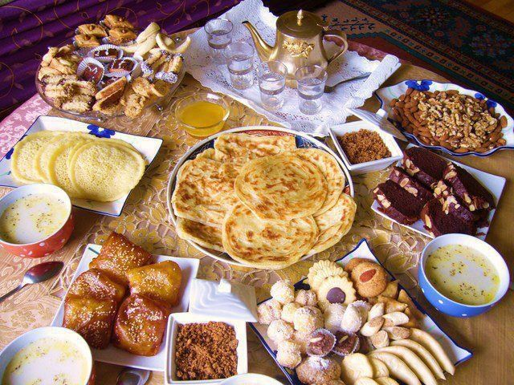
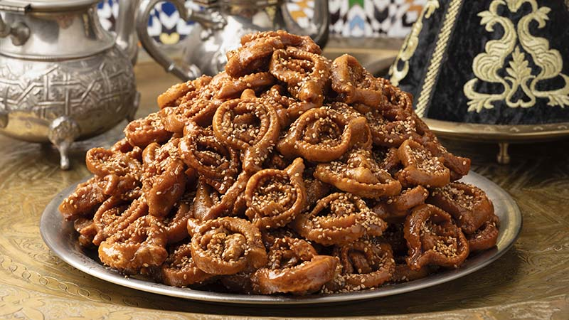
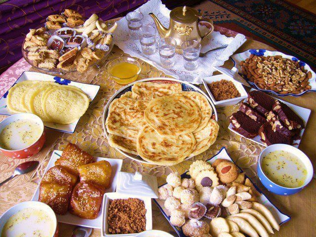

La culture marocaine : un héritage vivant entre tradition et modernité
Résumé :
La culture marocaine est un fascinant mélange d’influences amazighes, arabes,
andalouses, africaines
et méditerranéennes. Elle reflète la richesse d’un pays où chaque région exprime son identité à
travers la langue, la musique, la cuisine, l’artisanat et l’architecture.
Des traditions ancestrales comme la Tbourida, art équestre symbole de fierté
et de bravoure, aux
métiers artisanaux tels que la poterie, le tissage ou la gravure sur métal, le
Maroc préserve un
patrimoine vivant transmis de génération en génération.
Son architecture traditionnelle, avec ses médinas, kasbahs et monuments historiques, illustre
l’harmonie entre beauté, spiritualité et fonctionnalité. Le pays œuvre aujourd’hui à concilier la
préservation du patrimoine et la modernité, créant un équilibre unique entre passé et présent.
Enfin, la cuisine marocaine, riche en saveurs et en épices, est l’une des
plus réputées au monde.
Des plats emblématiques comme le couscous, le tajine ou la pastilla incarnent
l’art du partage et de
la convivialité.
Ainsi, la culture marocaine est bien plus qu’un ensemble de traditions :
c’est une philosophie de
vie fondée sur l’hospitalité, la tolérance et l’amour du beau, faisant du Maroc un carrefour vivant
entre histoire et modernité.